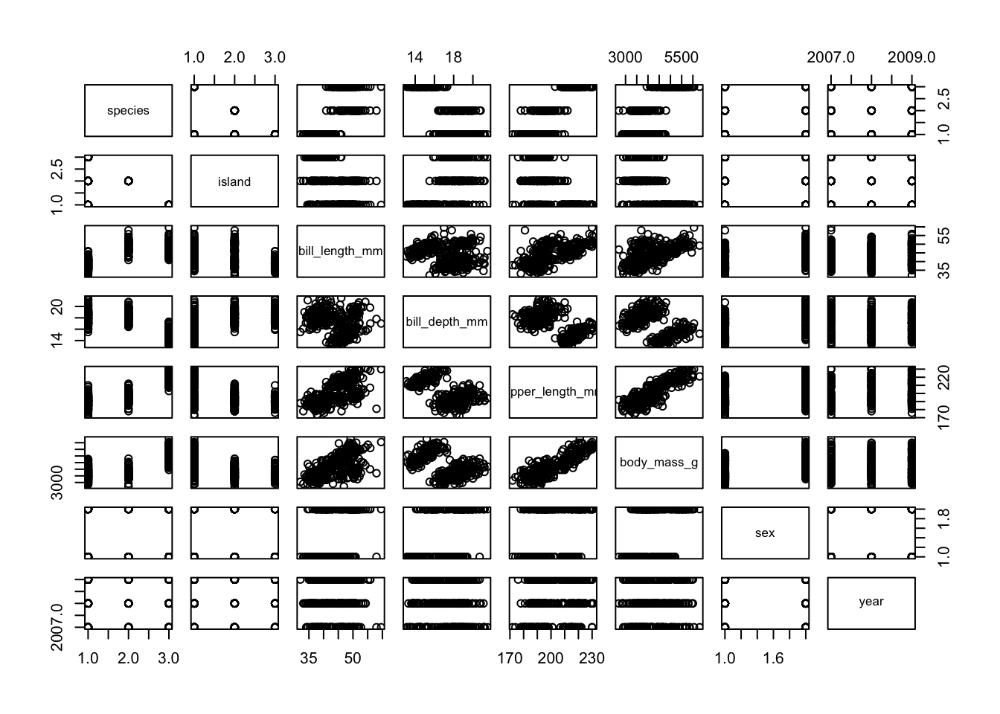

# install the palmerpenguins package
remotes::install_github("allisonhorst/palmerpenguins")
library( "palmerpenguins" )
data( penguins )Example: penguins
Let’s look at an example. We will load a dataset and make a regression model.
Penguin data
Begin by installing the palmerpenguins package from Allison Horst’s Github. Then load the package and import the data.
Estimate a linear model
Here’s a common task: estimate a linear regression model for some data. The result is an object (one that uses the S3 system)
# make a linear regression model:
penguin_lm = lm( body_mass_g ~ species + sex, data=penguins )
# check the lm object:
is.object( penguin_lm )[1] TRUEattr( penguin_lm, "class" )[1] "lm"class( penguin_lm )[1] "lm"The plot() function does more than one thing
What happens when you call the plot() function depends on what kind of object you are plotting. This had to be built into R! Functions only do what they are told, so how can plot() do different things?!
# plot the data and the model
plot( penguins )
layout( matrix(1:4, 2, 2))
plot( penguin_lm )The summary() function does more than one thing
Similarly, the summary() function can do different things depending on what object it works on. On a data.frame, summary() will summarize each column. Called on a fitted linear model, summary() will tell you about the coefficients, their significange levels, and calculate the model’s R-squared.
# summarize the data and the model
summary( penguins ) species island bill_length_mm bill_depth_mm
Adelie :152 Biscoe :168 Min. :32.10 Min. :13.10
Chinstrap: 68 Dream :124 1st Qu.:39.23 1st Qu.:15.60
Gentoo :124 Torgersen: 52 Median :44.45 Median :17.30
Mean :43.92 Mean :17.15
3rd Qu.:48.50 3rd Qu.:18.70
Max. :59.60 Max. :21.50
NA's :2 NA's :2
flipper_length_mm body_mass_g sex year
Min. :172.0 Min. :2700 female:165 Min. :2007
1st Qu.:190.0 1st Qu.:3550 male :168 1st Qu.:2007
Median :197.0 Median :4050 NA's : 11 Median :2008
Mean :200.9 Mean :4202 Mean :2008
3rd Qu.:213.0 3rd Qu.:4750 3rd Qu.:2009
Max. :231.0 Max. :6300 Max. :2009
NA's :2 NA's :2 summary( penguin_lm )
Call:
lm(formula = body_mass_g ~ species + sex, data = penguins)
Residuals:
Min 1Q Median 3Q Max
-816.87 -217.80 -16.87 227.61 882.20
Coefficients:
Estimate Std. Error t value Pr(>|t|)
(Intercept) 3372.39 31.43 107.308 <2e-16 ***
speciesChinstrap 26.92 46.48 0.579 0.563
speciesGentoo 1377.86 39.10 35.236 <2e-16 ***
sexmale 667.56 34.70 19.236 <2e-16 ***
---
Signif. codes: 0 '***' 0.001 '**' 0.01 '*' 0.05 '.' 0.1 ' ' 1
Residual standard error: 316.6 on 329 degrees of freedom
(11 observations deleted due to missingness)
Multiple R-squared: 0.8468, Adjusted R-squared: 0.8454
F-statistic: 606.1 on 3 and 329 DF, p-value: < 2.2e-16An lm object encapsulates many pieces
The linear model object penguin_lm contains a lot of pieces. You can see the names of the pieces by using the names() function.
# access some pieces that are encapsulated in the model:
names( penguin_lm ) [1] "coefficients" "residuals" "effects" "rank"
[5] "fitted.values" "assign" "qr" "df.residual"
[9] "na.action" "contrasts" "xlevels" "call"
[13] "terms" "model" penguin_lm$coefficients (Intercept) speciesChinstrap speciesGentoo sexmale
3372.38681 26.92385 1377.85803 667.55515 penguin_lm$calllm(formula = body_mass_g ~ species + sex, data = penguins)